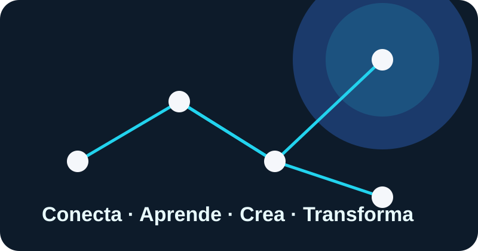

NEXO.SV es un espacio digital creado para jóvenes salvadoreños que quieren aprender, crear, participar y utilizar la tecnología de manera responsable.

La tecnología no solo sirve para consumir contenido: también puede convertirse en una herramienta para crecer y aportar a la comunidad.
Encuentra conocimiento, información y habilidades digitales para tu desarrollo.
Convierte tus ideas en proyectos, contenido, soluciones y oportunidades.
Infórmate, expresa tus ideas, organiza acciones y participa responsablemente.
Desarrolla hábitos para verificar información y cuidar tus datos personales.
Une lo aprendido con acciones que pueden generar cambios positivos.
Descubre qué tipo de usuario digital quieres ser: investigador, creador o participante.
La ciudadanía digital implica usar las tecnologías de forma responsable, crítica, segura y participativa.
En El Salvador, las herramientas digitales pueden apoyar el aprendizaje, el emprendimiento, la comunicación, la creatividad y la participación ciudadana.